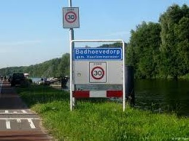
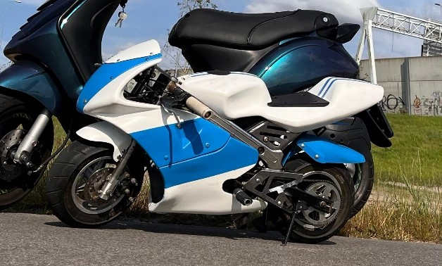
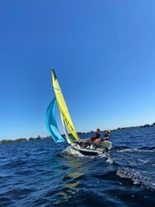

Jelle van Bussel

Ik ben geboren in Amsterdam ik woon nu in Badhoevedorp. Ik kom van de middelbare school het Rudolf
Steiner College en ik heb daar de mavo gedaan.
Badhoevedorp

Ik woon nu al 17 jaar in Badhoevedorp. Ik ben daar heen verhuist toen ik een paar maanden oud was.
Ik heb toen 13 jaar op de Ibisstraat gewoond. Toen ben ik naar een groter huis verhuist op de
Maraboestraat waar ik nu 4 jaar woon.
In mijn vrije tijd

Dingen die ik in mijn vrije tijd doe is zeilen, gamen en werken aan mijn pocket bike. Ik zeil al
sinds mijn 6de en ik vind het nog altijd leuk. Ik speel van alle soorten games maar mijn favoriete
games zijn Minecraft en lego Pirates of the carebien. En ik vind het geweldig om aan mijn pocket
bike te sleutelen.
Wat kan ik al

Ik ben een kei in Engels luisteren en spreken maar niet schrijven. Ik heb nog nooit een website of
een game gemaakt. Ik heb de gekste ideeën over uitvindingen.
Mijn top 10 motor voertuigen
-Mazda RX-7
-VW golf mk2 GTI
-Kawasaki ninja
-Fiat panda 4x4
-Kawasaki kx 250
-Toyota supra mk4
-BMW e30
-BMW e21
-Nissan GTR r34
-Mazda Miata